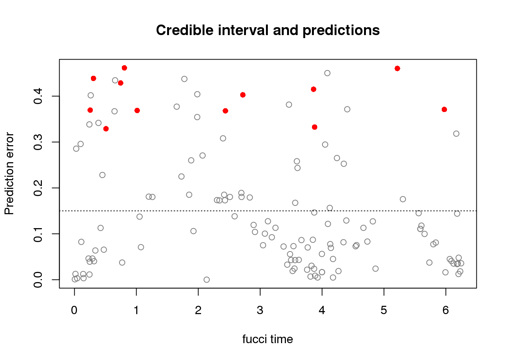

Prediction results for a random subset of cells
Joyce Hsiao
Last updated: 2018-07-14
Code version: b19387a
Retrieve and combine results
Code for summarizing results
diff_time_wrapper <- function(results_list) {
methods_list <- sapply(names(results_list),
function(x) strsplit(x, split=".", fixed=TRUE)[[1]][2])
diff_time_list <- do.call(rbind, lapply(1:length(results_list), function(i) {
diff_time <- results_list[[i]]$diff_time
diff_mean <- mean(diff_time/2/pi)
# diff_se <- sd(diff_time/2/pi)/sqrt(ncol(results_list[[1]]$Y))
return(data.frame(diff_mean=diff_mean,
# diff_se=diff_se,
methods=methods_list[i]))
}) )
return(diff_time_list)
}Summarizing results
ngenes <- c(5, seq(10,200, by=10))
genes_list <- readRDS("../data/results/results_topgenes.rds")
ll <- sapply(genes_list, length)[1:41]
eval_res <- do.call(rbind, lapply(1:length(ll), function(i) {
ngene <- ll[i]
# train_topX <- do.call(rbind, lapply(1:5, function(fold) {
fl_name <- list.files("../data/results",
pattern=paste0("results_eval.top",ngene,".rds"),
full.names = TRUE)
df <- readRDS(fl_name)
out <- diff_time_wrapper(df)
out$ngenes <- ngene
return(out)
}) )
eval_res$train <- "fucci_genes"
saveRDS(eval_res, file = "../output/method-eval.Rmd/diff_time.rds")
#ngenes <- c(5, seq(10,200, by=10))
genes_list <- readRDS("../data/results/results_topgenes.rds")
ll <- sapply(genes_list, length)[1:41]
train_top_permute <- do.call(rbind, lapply(1:length(ll), function(i) {
ngene <- ll[i]
fl_name <- list.files("../data/results",
pattern=paste0("results_eval_permute_oncyclical.top",ngene,".rds"),
full.names = TRUE)
df <- readRDS(fl_name)
out <- diff_time_wrapper(df)
out$ngenes <- ngene
return(out)
}) )
saveRDS(train_top_permute,
file = "../output/method-eval.Rmd/diff_time_permute_oncyclical.rds")Compare seurat with peco
fucci predict random cell times
df <- readRDS("../output/method-eval.Rmd/diff_time_permute_oncyclical.rds")
library(ggplot2)
#eval_res <- readRDS("../output/method-eval.Rmd/diff_time.rds")
ggplot(df,
aes(x=as.numeric(ngenes), y=diff_mean, color=methods)) +
geom_point() + geom_line(lty=3) +
ylab("Error margin (% arc length)") + xlab("Number of cyclical genes") +
ggtitle("Predict random cell times in the validation sample")view all results
eval_res <- readRDS("../output/method-eval.Rmd/diff_time.rds")
df <- readRDS("../data/results/results_eval.seuratgenes.rds")
eval_seuratgenes <- diff_time_wrapper(df)
eval_seuratgenes$ngenes <- 97
eval_seuratgenes$train <- "seurat_genes"
eval_sub <- subset(eval_res, methods != "seurat")
eval_combo <- rbind(eval_sub, eval_seuratgenes)
eval_combo$methods_combo <- paste0(eval_combo$methods," using ", eval_combo$train)
library(ggplot2)
#eval_res <- readRDS("../output/method-eval.Rmd/diff_time.rds")
ggplot(eval_combo,
aes(x=as.numeric(ngenes), y=diff_mean, color=methods_combo)) +
# geom_errorbar(subset(eval_res, methods == "supervised"),
# mapping=aes(ymin=diff_mean-diff_se, ymax=diff_mean+diff_se)) +
geom_point() + geom_line(lty=3) +
ylab("Error margin (% arc length)") + xlab("Number of cyclical genes") +
ggtitle("Prediction error in the validation sample")distribution of circular distance
# df <- readRDS("../data/results/results_eval.seuratgenes.rds")
# ggplot(data.frame(time=df$fit.supervised$pred_time_shift),
# aes(x=time)) +
# geom_histogram(binwidth=.15) +
# xlab("predicted time") +
# ggtitle("Peco prediction using Seurat genes")
df2 <- readRDS("../data/results/results_eval.top20.rds")
ggplot(data.frame(time=df2$fit.supervised$pred_time_shift),
aes(x=time)) +
geom_histogram(binwidth=.28) +
xlab("predicted time") +
ggtitle("Peco prediction using 20 genes")distribution of different time
df <- readRDS("../data/results/results_eval.seuratgenes.rds")
plot(x=df$fit.supervised$ref_time,
y=df$fit.supervised$diff_time,
col="royalblue", pch=16, cex=.7, ylim=c(0,pi),
xlab="Fucci time", ylab="Circular distance")
points(x=df$fit.supervised$ref_time,
y=df$fit.seurat$diff_time,
col="forestgreen", pch=1, cex=.7)
legend("topright", legend=c("Peco", "Seurat"),
col=c("royalblue", "forestgreen"), pch=c(16,1))Seurat time vs Seurat classes
tmp <- readRDS("../data/results/results_eval.seuratgenes.rds")
cols <- c("yellow", "orange", "red")
ggplot(data.frame(tmp$fit.seurat), aes(x=assignments,
y=pred_time_shift,
fill=assignments)) +
geom_violin(color="gray50") + geom_boxplot(width=.2, color="gray50") +
scale_fill_manual(values=cols) +
ylab("Seurat time") + xlab("Seurt assignment") +
ggtitle("Seurat time by Seurat classes")peco time vs peco classes
- based on BIC, should be 3 clusters
tmp <- readRDS("../data/results/results_eval.seuratgenes.rds")cluster peco times
library(movMF)
set.seed(21)
mov_res <- lapply(2:7, function(cl) {
movMF(cbind(cos(tmp$fit.supervised$cell_times_est),
sin(tmp$fit.supervised$cell_times_est)),
k=cl, nruns=20, kappa = list(common = TRUE))
})
saveRDS(mov_res, "../output/method-eval.Rmd/mov_res.rds")library(movMF)
mov_res <- readRDS("../output/method-eval.Rmd/mov_res.rds")
sapply(mov_res, function(x) BIC(x))[1] -43.32924 -69.94688 -60.16618 -64.13797 -65.95380 -68.47631clusts <- predict(mov_res[[2]])
#table(predict(mov_res[[3]]))
table(clusts)clusts
1 2 3
68 18 47 cols <- c("yellow", "orange", "red")
ggplot(data.frame(class=factor(clusts),
pred_time_shift=tmp$fit.supervised$pred_time_shift),
aes(x=class, y=pred_time_shift,
fill=class)) +
geom_violin(color="gray50") + geom_boxplot(width=.2, color="gray50") +
scale_fill_manual(values=cols) +
ylab("peco time") + xlab("peco assignment") +
ggtitle("Peco time by Peco classes")table(tmp$fit.seurat$assignments, clusts) clusts
1 2 3
G1 4 2 1
S 59 4 5
G2M 5 12 41Peco cell times by Seurat classes
ggplot(data.frame(class=tmp$fit.seurat$assignments,
pred_time_shift=tmp$fit.supervised$pred_time_shift),
aes(x=pred_time_shift,
group=class)) +
geom_histogram(aes(fill=class)) +
facet_wrap(~class) +
scale_fill_manual(values=cols) +
xlab("Peco time") +
ggtitle("Peco time by Seurat classes")ggplot(data.frame(class=factor(clusts),
pred_time_shift=tmp$fit.supervised$pred_time_shift),
aes(x=pred_time_shift,
group=class)) +
geom_histogram(aes(fill=class)) +
facet_wrap(~class) +
scale_fill_manual(values=cols) +
xlab("Peco time") +
ggtitle("Peco time by Peco classes")# eval_res <- readRDS("../output/method-eval.Rmd/diff_time.rds")
#
# ggplot(subset(eval_res, methods == "supervised"),
# aes(x=ngenes, y=diff_mean)) +
# # geom_errorbar(subset(eval_res, methods == "supervised"),
# # mapping=aes(ymin=diff_mean-diff_se, ymax=diff_mean+diff_se),
# # color="blue") +
# geom_point() + geom_line(lty=3) +
# ylab("Error margin (% arc length)") + xlab("Number of cyclical genes") +
# ggtitle("Prediction error in validation set")Confidence on the estimates
eval_res <- readRDS("../data/results/results_eval.seuratgenes.rds")
obj <- eval_res$fit.supervised
#grids <- as.numeric(colnames(obj$prob_per_cell_by_celltimes))
#ncells <- ncol(obj$Y)
#dd <- rep(NULL, ncells)
#print(j)
post_prob_vector <- obj$prob_per_cell_by_celltimes[1,]
credible_interval <- function(post_prob_vector, alpha=.05, verbose=F) {
which_max <- which.max(post_prob_vector)
if (which_max==length(post_prob_vector)) {
forward_grid_prob <- post_prob_vector[1:(which_max-1)]
reverse_grid_prob <- post_prob_vector[rev(1:(which_max-1))]
} else if (which_max==1) {
forward_grid_prob <- post_prob_vector[2:length(post_prob_vector)]
reverse_grid_prob <- post_prob_vector[rev(2:length(post_prob_vector))]
} else {
forward_grid_prob <- post_prob_vector[c(c((which_max+1):length(post_prob_vector)),
c(1:(which_max-1)))]
reverse_grid_prob <- post_prob_vector[c(rev(1:(which_max-1)),
rev((which_max+1):length(post_prob_vector)))]
}
sum_post_prob_initial <- post_prob_vector[which_max]
i=1
while(i<length(forward_grid_prob)) {
#print(i)
sum_post_prob_initial <- sum_post_prob_initial + forward_grid_prob[i] + reverse_grid_prob[i]
sum_post_prob_update <- sum_post_prob_initial
if (verbose) message("cum. prob:", sum_post_prob_update)
grid <- i
if (sum_post_prob_update > (1-alpha)) break
i=i+1
sum_post_prob_initial <- sum_post_prob_update
}
return(list(iter=i,
sum_post_prob=sum_post_prob_update,
forward_boundary=as.numeric(names(forward_grid_prob[grid])),
reverse_boundary=as.numeric(names(reverse_grid_prob[grid]))))
}
eval_res <- readRDS("../data/results/results_eval.seuratgenes.rds")
obj <- eval_res$fit.supervised
grids <- as.numeric(colnames(obj$prob_per_cell_by_celltimes))
ncells <- ncol(obj$Y)
dd <- rep(NULL, ncells)
for (j in 1:ncells) {
#print(j)
post_prob_vector <- obj$prob_per_cell_by_celltimes[j,]
rr=credible_interval(post_prob_vector, verbose=F)
which_max <- which.max(post_prob_vector)
if (rr$forward_boundary < rr$reverse_boundary) {
dd[j] <- !((obj$ref_time[j] >= rr$forward_boundary &
obj$ref_time[j] <= rr$reverse_boundary))
}
if (rr$forward_boundary > rr$reverse_boundary) {
dd[j] <- (obj$ref_time[j] >= rr$reverse_boundary &
obj$ref_time[j] <= rr$forward_boundary)
}
dd[j]
}
source("../peco/R/cycle.corr.R")
par(mfrow=c(1,1))
plot(obj$ref_time,
obj$diff_time/2/pi,
col=c("red", "gray50")[dd+1],
pch=c(16,1)[dd+1],
xlab="fucci time",
ylab="Prediction error",
main = "Credible interval and predictions")
abline(h=.15, lty=3, col="black")
par(mfrow=c(3,4))
for (j in 1:sum(dd==F)) {
cell_ind <- which(dd==F)[j]
post_prob_vector <- obj$prob_per_cell_by_celltimes[cell_ind,]
rr=credible_interval(post_prob_vector, verbose=F)
which_max <- which.max(post_prob_vector)
forward_grids <- c(c((which_max+1):length(post_prob_vector)),
c(1:(which_max-1)))
reverse_grids <- c(rev(1:(which_max-1)),
rev((which_max+1):length(post_prob_vector)))
cols <- rep("gray80", 100)
cols[c(reverse_grids[1:rr$iter])] <- "lightblue"
cols[c(forward_grids[1:rr$iter])] <- "lightblue"
cols[which_max] <- "lightblue"
# grids_outside <- grids[which(cols=="gray80")]
# if (theta_test[cell_ind] >= min(grids_outside) &
# theta_test[cell_ind] <= max(grids_outside))
plot(obj$prob_per_cell_by_celltimes[cell_ind,], type="h",
xaxt="n", ylab="Posterior prob", col=cols, axes=F,
xlab="Grid points", lwd=3)
axis(1, at=c(1,seq(20, 100, by=20)),
labels=round(grids[c(1,seq(20, 100, by=20))],3))
axis(2)
abline(v=which.max(obj$prob_per_cell_by_celltimes[cell_ind,]),
col="darkblue", lty=1, lwd=3)
abline(v=which.min(circ_dist(grids, obj$ref_time[cell_ind])),
col="red", lty=1, lwd=3)
title(paste(round(obj$diff_time[cell_ind]/2/pi,2)))
}
out_cells <- colnames(obj$Y)[dd==FALSE]Get outlier info.
data_withheld <- readRDS("../data/results/data_withheld.rds")
plot(obj$gfp,
obj$rfp,
col=c("red", "gray50")[dd+1])
abline(h=0, v=0, lty=3)
all.equal(colnames(obj$Y), rownames(data_withheld$pdata.valid))[1] TRUEpd <- data_withheld$pdata.valid[which(rownames(data_withheld$pdata.valid) %in% out_cells),]
cbind(pd$image_individual, pd$image_label) [,1] [,2]
[1,] "19098_18870" "25"
[2,] "18870_19101" "82"
[3,] "18870_19160" "69"
[4,] "18870_18511" "45"
[5,] "18855_19101" "34"
[6,] "19101_19160" "52"
[7,] "19160_18511" "54"
[8,] "18870_19160" "77"
[9,] "19098_18870" "55"
[10,] "18855_19160" "44"
[11,] "19098_19160" "22"
[12,] "18870_19160" "8" pchs <- rep("0", length(obj$gfp))
pchs[colnames(obj$Y) == out_cells[1]] <- "1"
pchs[colnames(obj$Y) == out_cells[2]] <- "2"
pchs[colnames(obj$Y) == out_cells[3]] <- "3"
pchs[colnames(obj$Y) == out_cells[4]] <- "4"
plot(obj$gfp,
obj$rfp,
col=c("red", "gray50")[dd+1])
abline(h=0, v=0, lty=3)ii <- abs(data_withheld$pdata.valid$gfp.median.log10sum.adjust) < .1 & abs(data_withheld$pdata.valid$rfp.median.log10sum.adjust) < .1 & dd == FALSE
colnames(obj$Y)[ii==T][1] "20170920-A12" "20170912-B04"plot(obj$ref_time,
obj$dapi,
col=c("red", "gray50")[dd+1])
abline(h=0, lty=3)pca_res <- prcomp(t(data_withheld$log2cpm.valid), scale=T)
sapply(1:5, function(i) summary(lm(pca_res$x[,i]~dd))$adj.r.squared)[1] 0.067868292 0.015484770 -0.002950017 -0.007614391 -0.003504711plot(obj$ref_time,
obj$diff_time,
col=c("red", "gray50")[dd+1])print for visual examination
pdf("../output/method-eval.Rmd/uncertainties.pdf")
par(mfrow=c(4,5))
for (cell_ind in 1:133) {
print(cell_ind)
#cell_ind <- which(dd==F & obj$diff_time/2/pi < .15)[j]
post_prob_vector <- obj$prob_per_cell_by_celltimes[cell_ind,]
rr=credible_interval(post_prob_vector, verbose=F)
which_max <- which.max(post_prob_vector)
forward_grids <- c(c((which_max+1):length(post_prob_vector)),
c(1:(which_max-1)))
reverse_grids <- c(rev(1:(which_max-1)),
rev((which_max+1):length(post_prob_vector)))
cols <- rep("gray80", 100)
cols[c(reverse_grids[1:rr$iter])] <- "lightblue"
cols[c(forward_grids[1:rr$iter])] <- "lightblue"
cols[which_max] <- "lightblue"
# grids_outside <- grids[which(cols=="gray80")]
# if (theta_test[cell_ind] >= min(grids_outside) &
# theta_test[cell_ind] <= max(grids_outside))
plot(obj$prob_per_cell_by_celltimes[cell_ind,], type="h",
xaxt="n", ylab="Posterior prob", col=cols, axes=F,
xlab="Grid points", lwd=3)
axis(1, at=c(1,seq(20, 100, by=20)),
labels=round(grids[c(1,seq(20, 100, by=20))],3))
axis(2)
abline(v=which.max(obj$prob_per_cell_by_celltimes[cell_ind,]),
col="darkblue", lty=1, lwd=3)
abline(v=which.min(circ_dist(grids, obj$ref_time[cell_ind])),
col="red", lty=1, lwd=3)
title(paste(round(obj$diff_time[cell_ind]/2/pi,2)))
}
dev.off()Session information
sessionInfo()R version 3.4.3 (2017-11-30)
Platform: x86_64-pc-linux-gnu (64-bit)
Running under: Scientific Linux 7.4 (Nitrogen)
Matrix products: default
BLAS/LAPACK: /software/openblas-0.2.19-el7-x86_64/lib/libopenblas_haswellp-r0.2.19.so
locale:
[1] LC_CTYPE=en_US.UTF-8 LC_NUMERIC=C
[3] LC_TIME=en_US.UTF-8 LC_COLLATE=en_US.UTF-8
[5] LC_MONETARY=en_US.UTF-8 LC_MESSAGES=en_US.UTF-8
[7] LC_PAPER=en_US.UTF-8 LC_NAME=C
[9] LC_ADDRESS=C LC_TELEPHONE=C
[11] LC_MEASUREMENT=en_US.UTF-8 LC_IDENTIFICATION=C
attached base packages:
[1] stats graphics grDevices utils datasets methods base
other attached packages:
[1] movMF_0.2-2 ggplot2_2.2.1
loaded via a namespace (and not attached):
[1] Rcpp_0.12.17 knitr_1.20 magrittr_1.5 munsell_0.4.3
[5] colorspace_1.3-2 rlang_0.1.6 stringr_1.2.0 plyr_1.8.4
[9] tools_3.4.3 grid_3.4.3 gtable_0.2.0 git2r_0.21.0
[13] htmltools_0.3.6 yaml_2.1.16 lazyeval_0.2.1 rprojroot_1.3-2
[17] digest_0.6.15 tibble_1.4.2 slam_0.1-42 evaluate_0.10.1
[21] rmarkdown_1.10 labeling_0.3 stringi_1.1.6 compiler_3.4.3
[25] pillar_1.1.0 scales_0.5.0 backports_1.1.2 This R Markdown site was created with workflowr